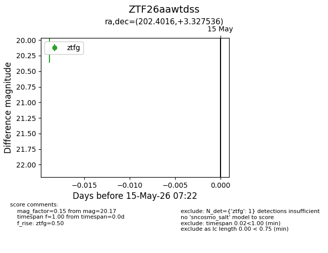
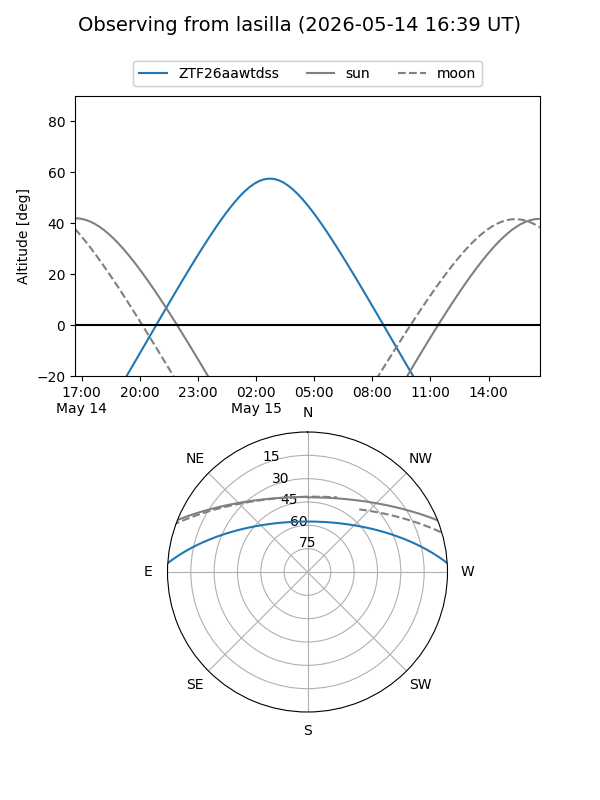
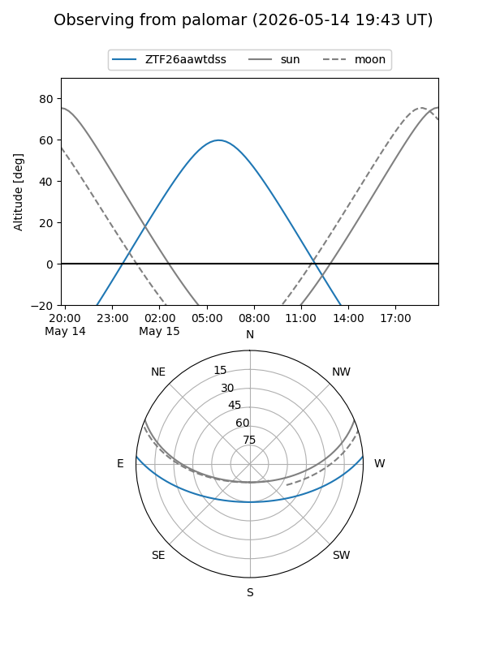

ZTF26aawtdss
Target ZTF26aawtdss at 2026-05-15 07:24
Aliases and brokers:
FINK: link
Lasair: link
ALeRCE: link
alt names
ZTF26aawtdss (ztf,fink_ztf)
Coordinates:
equatorial (ra, dec) = 202.4016,+3.32754
equatorial (HMS+DMS) = 13:29:36.38,+03:19:39.13
galactic (l, b) = (325.5479,+64.51015)
Flags:
Photometry:
last ztfg=20.17
1 ztfg detections
Lightcurve

Visibility


Additional plots